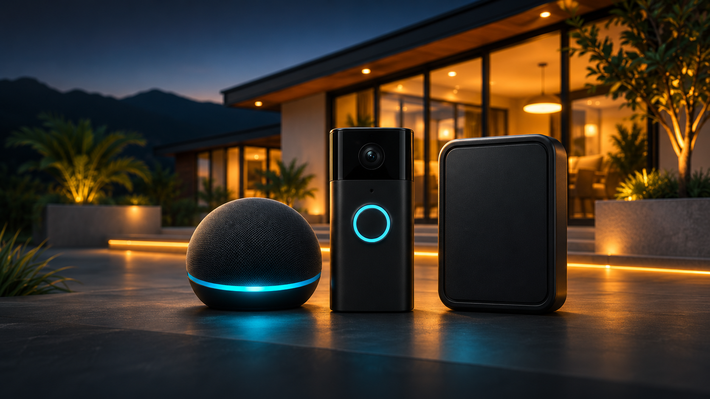
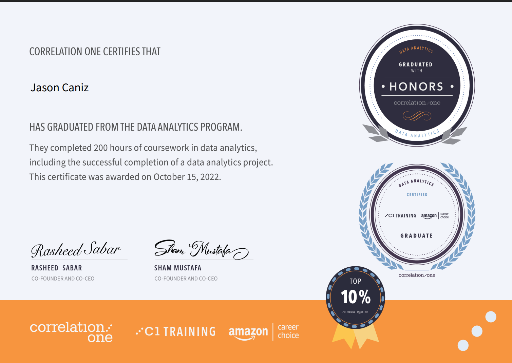
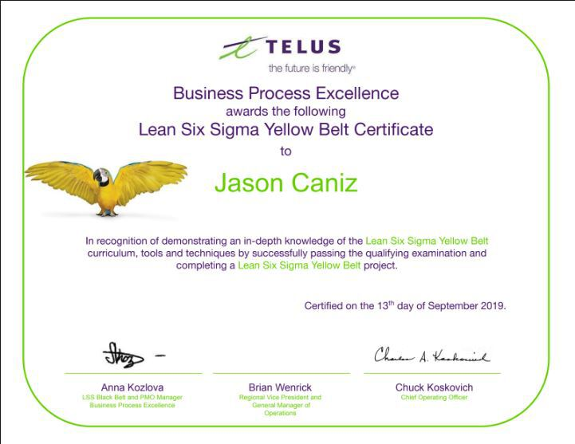

INTELLIGENCE / WORKFLOW● DEMONSTRATED POC
PRODUCTION DATA→NMLS→CRM
RESEARCH → VERIFY → REVIEW
Mr. E
A mortgage recruiting proof of concept with live Model Match read-only testing and simulated research, quality review, and matching workflows.
TECHNOLOGY & ANALYTICS · PROFESSIONAL PORTFOLIO
I connect business operations, data storytelling, project delivery, and thoughtful automation to help teams move from information to action.
I'm a business operations and data analytics professional with over a decade of experience turning complexity into clear, actionable strategies.
My career has included work at Amazon and TELUS Digital, focusing on cross-functional collaboration, process improvement, and the use of data to support performance and business decisions.
My approach is pragmatic: understand the problem, choose the right methodology, measure progress, and make solutions useful for the people doing the work.
02 / PORTFOLIO
Selected work in recruiting, connected customer experiences, Google program operations, analytics, and education. Explore the project overviews and full case studies.
A mortgage recruiting proof of concept with live Model Match read-only testing and simulated research, quality review, and matching workflows.

Customer solutions, operational reporting, and knowledge management across Amazon, Ring, and Key for Business.
Led Google Play survey transfer pilots and a Google Pay Lean Six Sigma certification project at TELUS.
From fellow to
curriculum design.
From fellow and dashboard creator to Statistics Co-Lead Instructor, Operations Analyst applicant, and curriculum contributor. Explore three projects from my Correlation One experience.
Explore the Tableau dashboards and watch a Correlation One teaching session in the video below. The dashboard links also open each workbook directly in Tableau Public.
Historical housing and income comparisons, investor activity, and supporting market indicators.
Open housing dashboard See the capstone case study ↗Demographic breakdowns and learning-support performance data organized for program visibility.
Open cohort dashboardCorrelation One instructional recording from April 30, 2023.
Watch on YouTube04 / CONTINUOUS LEARNING
Each certificate image and verification link opens the individual credential directly.

CORRELATION ONE · 2022

TELUS · 2019
05 / LET'S CONNECT
Have a project in mind? Reach out by email or WhatsApp and tell me what you’re working on.